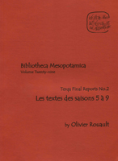

Giorgio Buccellati
Olivier Rouault, Terqa Final Reports No.2: Les textes des saisons 5 a 9
Malibu: Undena Publications, 2011
|  | This volume presents the publication by O. Rouault of the epigraphic documents discovered in the 5th through the 9th season of excavations at Tell Ashara-Terqa (Syria), by the Archaeological Mission directed by G. Buccellati and M. Kelly-Buccellati. The total of 97 documents, found in Areas C and F, is unevenly distributed between the five seasons of excavation (respectively 17, 6, 20, 24, and 30). Three periods are represented: Old Hana (Area C), late Sakkanakku and Old Babylonian (Area F). The ten documents of the Sakkanakku period - legal and administrative - present data that are rather new: they illustrate the specificity of the scribal tradition during this period, but at the same time they show that some characteristics of the legal Old Babylonian documents find their origin there. Of the 62 Old Babylonian documents, around 20 are of administrative type (management of workers, various distributions, recordings of the production of fields, etc) and ten are letters. Two legal texts are particularly interesting: a contract of division of heritage and a report of a lawsuit mentioning the governor Kibri-Dagan and the royal judge. School texts and a literary fragment written in emesal dialect show that a high level scribal school functioned at Terqa at that time. Lastly, a fragment of a divinatory report and allusions in the letters give information on these types of activity. Among the 27 texts of the time of Hana, we find the same typology: administrative documents and letters, school, legal and religious texts, this last category being represented by a list of offerings to the goddess Ninkarrak, found in her temple. The work presents first all of the texts, season by season, in transcription and translation. Exhaustive indices are given, along with an analytical table where the texts are sorted according to chronology and typology, allowing a thematic approach to the collection. After the bibliography, the documents are presented with hand copies and photographs given side by side. |
{kind=link}
| Back to Publications | Table of Contents |